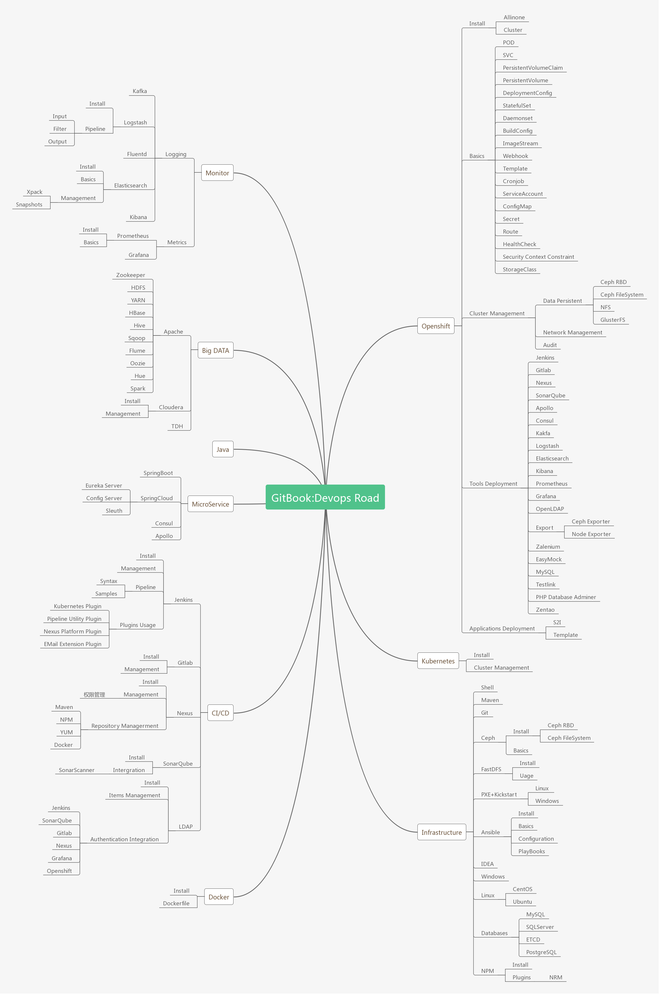
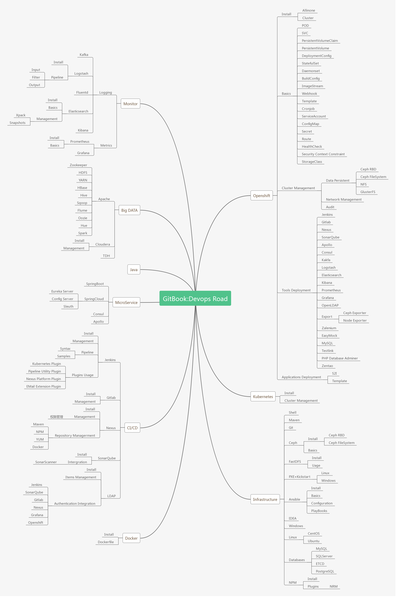

Curiouser's Devops Roadmap
This gitbook records the technical roadmap of Devops Curiouser.
Link
GitHub: https://github.com/RationalMonster
What I had done at Openshift or Kubernetes

The technical MindMap

This gitbook records the technical roadmap of Devops Curiouser.
GitHub: https://github.com/RationalMonster
